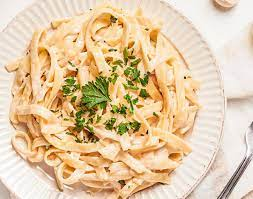

Pasta

Pasta, a staple in Italian cuisine, is a versatile and comforting dish enjoyed worldwide. Typically
from durum wheat, it comes in various shapes and sizes. Boiled until al dente, pasta is paired
with an array of sauces, such as marinara, Alfredo, or pesto, offering diverse flavor profiles.
Its adaptability extends to accompaniments like vegetables, meats, and cheeses, providing endless
possibilities for creating satisfying and flavorful meals. Whether twirled around a fork or
layered in a baked dish like lasagna, pasta remains a timeless and beloved culinary canvas for
creativity and taste.
Ingredients
- Pasta
- Chicken
- Salt
- Olive Oil
- Sauce
- Onion
- Tomato
- Bell Peppers
- Cheese
- Garlic Powder
- Oregano
Steps
- Cook the Pasta:
- Boil the pasta in a large pot of salted water according to the package instructions. Drain and set aside.
- Cook the Chicken:
- Season the chicken pieces with salt and cook them in a pan with olive oil until fully cooked and slightly browned. Set aside.
- . Prepare the Sauce:
- In the same pan, add a bit more olive oil if needed. Sauté diced onions until translucent.
- Add diced tomatoes and sliced bell peppers. Cook until the vegetables are softened.
- Season the Sauce:
- Stir in the pasta sauce, garlic powder, and oregano. Adjust the seasoning to taste.
- Combine Pasta and Chicken:
- Add the cooked chicken pieces to the sauce, allowing them to absorb the flavors.
- Combine Pasta and Sauce:
- Mix the cooked pasta into the sauce, ensuring that the pasta is well coated.
- Serve:
- Dish out the chicken pasta onto plates.
- Top each serving with grated cheese and a sprinkle of oregano.
- Enjoy:
- Serve the chicken pasta while it's hot. Optionally, you can add a drizzle of olive oil or more grated cheese on top before serving.
Back to Main Menu